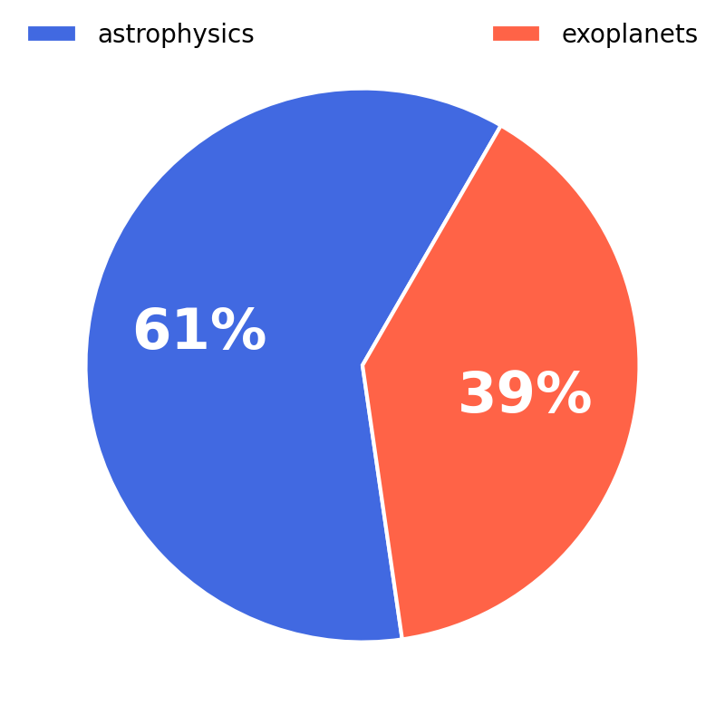

On this page you can find some of the key statistics for TESS mission.
TESS Publications
|
While TESS was originally designed to find exoplanets, the required stable, high-cadence images that cover the entire sky have applications to many other fields of astronomy. Currently ~60% of publications using TESS data come from fields outside of exoplanet science, including stars, supernovae, and solar system objects. The plot below shows the cumulative number of peer-reviewed journal articles utilizing TESS data over time. The TESS papers are further broken up into papers related to exoplanets or astrophysics, which in this context is all applications outside of exoplanets. While initially exoplanets and other science were roughly equally represented, the trend indicates that TESS is being increasingly used for purposes outside of the primary mission goal. |
 |
Contributing Authors in the USA
This map shows the location of the home institution of US-based authors contributing to TESS publications. States containing institutions heavily involved with the development and operation of TESS (California, Massachusetts, and Maryland) show a strong concentration of authors. However, TESS has reached authors at nearly every state.
TESS Around the World
TESS data is completely open access, so it's impact can be seen around the globe. This plot shows the location of lead (first) authors on publications utilizing TESS data. Hover your mouse over the countries to see the breakdown around the world.
Career Stage of TESS GIs
TESS GI funding awards ~$3M a year to support science conducted with TESS data. The Principal Investigators (PIs) of successful proposals have a broad range of experience. As shown in the pie chart below, for TESS Cycles 1-6, 63% of PIs are early career scientists, meaning within 10 years of receiving their PhD. Impressively, nearly 10% of successful PIs are still students. The career stage is further broken down in the histogram on the right.